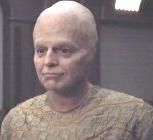

Specie 116 |
|
||||
|  |
Civiltà umanoide tecnologicamente molto avanzata del quadrante Delta. I
membri di questa specie sono dei linguisti nati e alcuni di loro parlano
correntemente migliaia di idiomi differenti. I Borg
hanno tentato vanamente per secoli di assimilare questa razza, fino al
2374,
quando i Borg sono riusciti ad assimilare tutta la
popolazione, con l'eccezione di circa 20.000 individui, tra cui Arturis, che è
stato assimilato dopo il tentativo di far assimilare la Voyager.